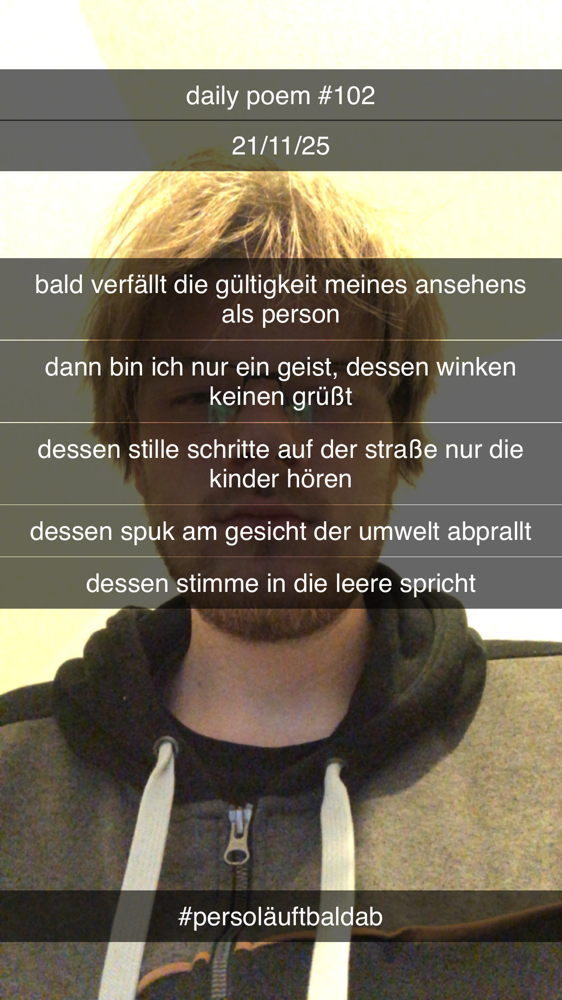

Bald verfällt die Gültigkeit meines Ansehens als Person
[102]Bald verfällt die Gültigkeit meines Ansehens als Person;
Dann bin ich nur ein Geist, dessen Winken keinen grüßt –
Dessen stille Schritte auf der Straße nur die Kinder hören –
Dessen Spuk am Gesicht der Umwelt abprallt –
Dessen Stimme in die Leere spricht...
